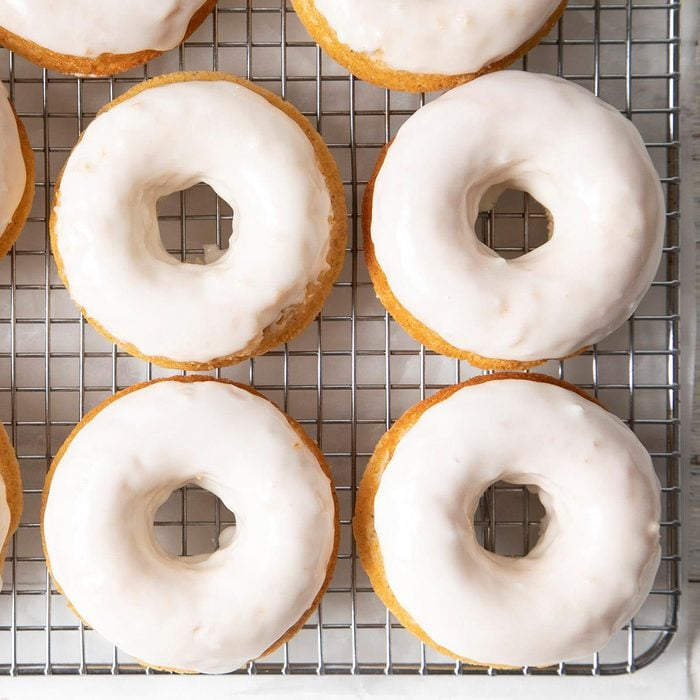

Baked Doughnuts

Learn how to prepare some beautiful Baked Doughnuts
Prep: 25 min.
Cook: 15 min.
Makes: 1 dozen
Ingredients
- 2 cups all-purpose flour
- 1-1/4 cups sugar
- 2 teaspoons baking powder
- 1/2 teaspoon salt
- 1/2 teaspoon ground cinnamon
- 1/4 teaspoon ground nutmeg
- 2 large eggs, room temperature
- 1 cup 2% milk
- 3 tablespoons butter, melted
- 1 teaspoon vanilla extract
Glaze
- 2-1/2 cups confectioners' sugar
- 2 tablespoons light corn syrup
- 2 tablespoons butter, melted
- 1/4 cup 2% milk
- 1 teaspoon vanilla extract
Steps
- Preheat oven to 350°. In a small bowl, combine the first 6 ingredients. Combine eggs, milk, butter and vanilla; stir into dry ingredients just until moistened. Cut a small hole in the corner of a food-safe plastic bag; fill with batter. Pipe into a greased 6-cavity doughnut pan, filling cavities two-thirds full.
- Bake until a toothpick inserted in the center comes out clean, 10-12 minutes. Cool for 5 minutes before removing from pans to wire racks to cool completely.
- In a small bowl, combine glaze ingredients. Dip each doughnut halfway, allowing excess to drip off. Place on wire rack; let stand until set.